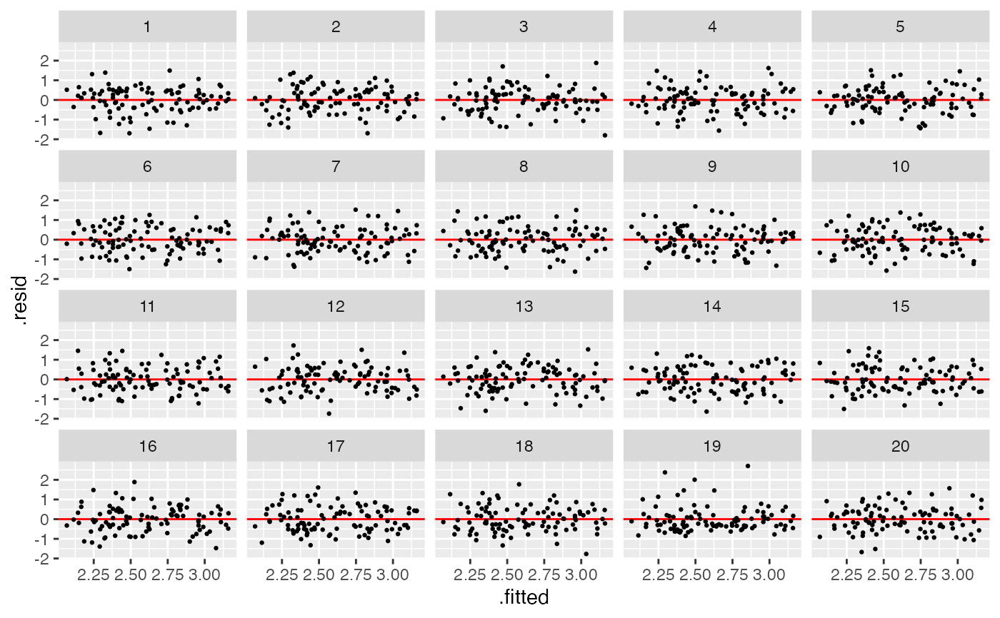
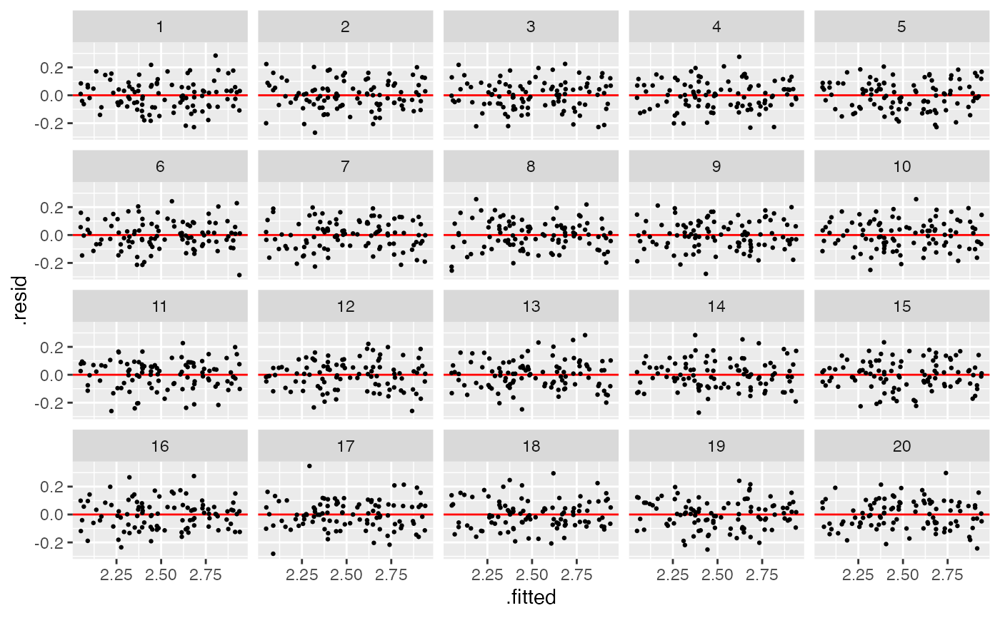

This function will be called after an instance is built. User
input will be stored in the environment. The response variable of this model
is y. The formula of y is defined in NON_NORMAL_MODEL$formula, the null
formula is defined in NON_NORMAL_MODEL$null_formula, the alternative is
defined in NON_NORMAL_MODEL$alt_formula.
Arguments
- x
Random variable or closed form expression. Default is
x = rand_uniform(-1, 1, env = new.env(parent = parent.env(self))).- e
Random variable or closed form expression. Default is
e = rand_lognormal(0, sigma, env = new.env(parent = parent.env(self))).
Examples
# Instantiate
x <- rand_uniform()
e <- rand_lognormal(sigma = 0.5)
test <- non_normal_model(x = x, e = e)
test
#>
#> ── <NON_NORMAL_MODEL object>
#> y = 1 + x + e
#> - x: <RAND_UNIFORM object>
#> [a: 0, b: 1]
#> - e: <RAND_LOGNORMAL object>
#> [mu: 0, sigma: 0.5]
# Generate data
test$gen(10)
#> y x e .resid .fitted
#> 1 2.391012 0.01560364 1.3754081 0.539550663 1.851461
#> 2 1.495592 0.04114743 0.4544442 -0.375927998 1.871520
#> 3 2.590158 0.34181611 1.2483416 0.482534139 2.107624
#> 4 1.759085 0.09582660 0.6632586 -0.155371920 1.914457
#> 5 2.427548 0.73897184 0.6885760 0.008052568 2.419495
#> 6 1.716567 0.27015548 0.4464114 -0.334784286 2.051351
#> 7 2.062545 0.39075994 0.6717851 -0.083512351 2.146057
#> 8 2.251777 0.72791796 0.5238587 -0.159038378 2.410815
#> 9 2.716843 0.99019490 0.7266486 0.100072086 2.616771
#> 10 2.152389 0.42629773 0.7260916 -0.021574523 2.173964
# Generate lineup
test$gen_lineup(10, k = 3)
#> y x e .resid .fitted test_name statistic
#> 1 2.432726 0.1191926 1.3135333 -0.103540120 2.536266 Shapiro-test 0.9681300
#> 2 2.729167 0.3289581 1.4002093 0.086483796 2.642684 Shapiro-test 0.9681300
#> 3 3.149750 0.8069489 1.3428012 0.264573837 2.885176 Shapiro-test 0.9681300
#> 4 2.579223 0.1635338 1.4156888 0.020461501 2.558761 Shapiro-test 0.9681300
#> 5 2.745409 0.1375378 1.6078709 0.199835785 2.545573 Shapiro-test 0.9681300
#> 6 2.679236 0.4886426 1.1905930 -0.044458591 2.723694 Shapiro-test 0.9681300
#> 7 3.322861 0.5347001 1.7881604 0.575800602 2.747060 Shapiro-test 0.9681300
#> 8 2.309022 0.4300653 0.8789563 -0.384955367 2.693977 Shapiro-test 0.9681300
#> 9 2.169324 0.6201941 0.5491296 -0.621108735 2.790432 Shapiro-test 0.9681300
#> 10 2.789020 0.6037949 1.1852253 0.006907291 2.782113 Shapiro-test 0.9681300
#> 11 2.674269 0.1191926 1.3135333 0.138003015 2.536266 Shapiro-test 0.8851872
#> 12 2.905962 0.3289581 1.4002093 0.263278731 2.642684 Shapiro-test 0.8851872
#> 13 3.099489 0.8069489 1.3428012 0.214312940 2.885176 Shapiro-test 0.8851872
#> 14 2.267033 0.1635338 1.4156888 -0.291728334 2.558761 Shapiro-test 0.8851872
#> 15 2.857039 0.1375378 1.6078709 0.311466570 2.545573 Shapiro-test 0.8851872
#> 16 2.666306 0.4886426 1.1905930 -0.057387771 2.723694 Shapiro-test 0.8851872
#> 17 2.063661 0.5347001 1.7881604 -0.683399090 2.747060 Shapiro-test 0.8851872
#> 18 2.387457 0.4300653 0.8789563 -0.306519700 2.693977 Shapiro-test 0.8851872
#> 19 3.119989 0.6201941 0.5491296 0.329556833 2.790432 Shapiro-test 0.8851872
#> 20 2.864530 0.6037949 1.1852253 0.082416805 2.782113 Shapiro-test 0.8851872
#> 21 2.574754 0.1191926 1.3135333 0.038488048 2.536266 Shapiro-test 0.8987383
#> 22 2.826197 0.3289581 1.4002093 0.183513606 2.642684 Shapiro-test 0.8987383
#> 23 2.689916 0.8069489 1.3428012 -0.195260104 2.885176 Shapiro-test 0.8987383
#> 24 2.823730 0.1635338 1.4156888 0.264969380 2.558761 Shapiro-test 0.8987383
#> 25 1.970917 0.1375378 1.6078709 -0.574655601 2.545573 Shapiro-test 0.8987383
#> 26 2.519623 0.4886426 1.1905930 -0.204071456 2.723694 Shapiro-test 0.8987383
#> 27 3.125421 0.5347001 1.7881604 0.378361165 2.747060 Shapiro-test 0.8987383
#> 28 2.950641 0.4300653 0.8789563 0.256663813 2.693977 Shapiro-test 0.8987383
#> 29 3.077492 0.6201941 0.5491296 0.287059814 2.790432 Shapiro-test 0.8987383
#> 30 2.347044 0.6037949 1.1852253 -0.435068665 2.782113 Shapiro-test 0.8987383
#> p_value k null
#> 1 0.8729865 1 FALSE
#> 2 0.8729865 1 FALSE
#> 3 0.8729865 1 FALSE
#> 4 0.8729865 1 FALSE
#> 5 0.8729865 1 FALSE
#> 6 0.8729865 1 FALSE
#> 7 0.8729865 1 FALSE
#> 8 0.8729865 1 FALSE
#> 9 0.8729865 1 FALSE
#> 10 0.8729865 1 FALSE
#> 11 0.1495836 2 TRUE
#> 12 0.1495836 2 TRUE
#> 13 0.1495836 2 TRUE
#> 14 0.1495836 2 TRUE
#> 15 0.1495836 2 TRUE
#> 16 0.1495836 2 TRUE
#> 17 0.1495836 2 TRUE
#> 18 0.1495836 2 TRUE
#> 19 0.1495836 2 TRUE
#> 20 0.1495836 2 TRUE
#> 21 0.2122056 3 TRUE
#> 22 0.2122056 3 TRUE
#> 23 0.2122056 3 TRUE
#> 24 0.2122056 3 TRUE
#> 25 0.2122056 3 TRUE
#> 26 0.2122056 3 TRUE
#> 27 0.2122056 3 TRUE
#> 28 0.2122056 3 TRUE
#> 29 0.2122056 3 TRUE
#> 30 0.2122056 3 TRUE
# Plot the lineup
test$plot_lineup(test$gen_lineup(100))

test <- non_normal_model(x = x, e = rand_lognormal(sigma = 0.1))
test$plot_lineup(test$gen_lineup(100))

test <- non_normal_model(x = x, e = rand_lognormal(sigma = 0.5))
test$plot_lineup(test$gen_lineup(100))
 test <- non_normal_model(x = x, e = rand_lognormal(sigma = 1))
test$plot_lineup(test$gen_lineup(100))
test <- non_normal_model(x = x, e = rand_lognormal(sigma = 1))
test$plot_lineup(test$gen_lineup(100))
 test <- non_normal_model(x = x, e = rand_lognormal(sigma = 2))
test$plot_lineup(test$gen_lineup(100))
test <- non_normal_model(x = x, e = rand_lognormal(sigma = 2))
test$plot_lineup(test$gen_lineup(100))